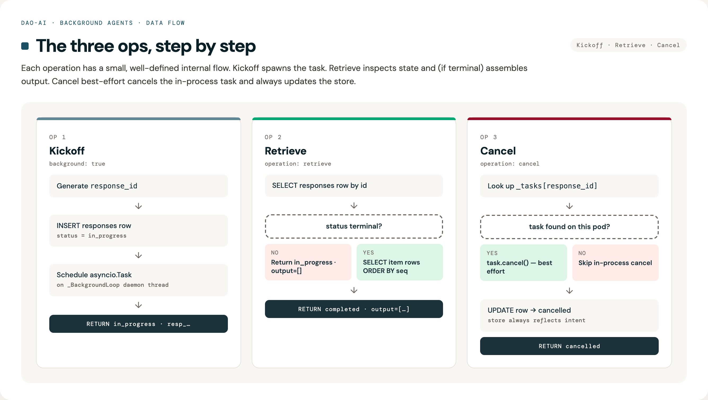

Background Agents¶
Overview¶
Background agents extend dao-ai with a kickoff → poll → retrieve flow so
agent runs can exceed Databricks' synchronous-request limits. It's an
opt-in, OpenAI Responses API–compatible layer that wraps any dao-ai
ResponsesAgent, persists progress to Lakebase, and runs on both
Databricks Apps and Databricks Model Serving with near-parity — the only
difference is that SSE retrieve is Apps-only, because Model Serving
can't mount custom streaming routes. Model Serving clients poll
non-streaming retrieve instead; both targets use the same
BackgroundResponsesAgent handler under the hood.
Problem Solved¶
Before (synchronous only)¶
User: "Research long-running agent infrastructure at Databricks"
→ POST /invocations (stream = false)
→ Worker thread runs the graph …
→ 5 minutes elapse
→ Model Serving kills the worker → 500 Internal Server Error ❌
User (from a Databricks App):
→ POST /invocations
→ 120 seconds elapse
→ DPAPI proxy cuts the HTTP connection → 504 Gateway Timeout ❌
Why this hurts: deep-research, multi-tool, or multi-agent workflows routinely need 5–30 minutes. Databricks Model Serving workers time out at ~5 min, and Databricks Apps' DPAPI proxy terminates HTTP connections at ~120 s. Neither limit is configurable today.
After (kickoff + poll)¶
User: "Research long-running agent infrastructure at Databricks"
→ POST /v1/responses (background: true)
← 200 OK { id: "resp_abc", status: "in_progress", output: [] } (<1 s)
Agent continues on a persistent daemon thread, writing stream events to
Lakebase as it runs (may take 30 minutes).
User polls every 1-2 seconds:
→ GET /v1/responses/resp_abc
← 200 OK { id: "resp_abc", status: "in_progress", output: [] }
…
→ GET /v1/responses/resp_abc
← 200 OK { id: "resp_abc", status: "completed", output: [ … ] } ✅
Key properties:
- OpenAI-client compatible on Apps (client.responses.create(background=True)
+ client.responses.retrieve(id) work unchanged).
- Single agent implementation — the same LanggraphResponsesAgent
serves both the passthrough synchronous path and the background path;
the background wrapper is transparent.
- Survives the per-request event loop — background work runs on a
process-level daemon thread with its own persistent asyncio loop, so
Model Serving's per-request asyncio.run() teardown can't cancel the
task.
- Stream events are persisted and can be replayed with a cursor for
stream-resumption on reconnect (Apps only).
Architecture¶
Component interaction diagram¶
sequenceDiagram
participant Client
participant Route as Apps /v1/responses*<br/>-- or --<br/>MS /invocations
participant Wrapper as BackgroundResponsesAgent
participant BgLoop as _BackgroundLoop<br/>(daemon thread)
participant Inner as LanggraphResponsesAgent
participant DB as Lakebase<br/>(dao_ai_responses,<br/>dao_ai_response_messages)
Note over Client,DB: Kickoff
Client->>Route: POST request (background=true)
Route->>Wrapper: apredict(request)
Wrapper->>DB: INSERT dao_ai_responses (status=in_progress)
Wrapper->>BgLoop: submit(_run_background(response_id, request))
Wrapper-->>Route: ResponsesAgentResponse(id=resp_…, status=in_progress, output=[])
Route-->>Client: 200 OK
Note over BgLoop,Inner: Background task proceeds on dedicated thread
BgLoop->>Inner: apredict_stream(request)
loop per stream event
Inner-->>BgLoop: ResponsesAgentStreamEvent (chunk)
BgLoop->>DB: INSERT dao_ai_response_messages (seq, stream_event)
end
BgLoop->>BgLoop: responses_agent_output_reducer(collected)
BgLoop->>DB: INSERT final items (item rows)
BgLoop->>DB: UPDATE dao_ai_responses SET status='completed'
Note over Client,DB: Poll
Client->>Route: GET /v1/responses/{id} (or /invocations with operation=retrieve)
Route->>Wrapper: apredict(request)
Wrapper->>DB: SELECT dao_ai_responses + get_output(item rows)
DB-->>Wrapper: record + items
Wrapper-->>Route: ResponsesAgentResponse(id, status, output)
Route-->>Client: 200 OK
Note over Client,DB: Cancel (optional)
Client->>Route: POST /v1/responses/{id}/cancel
Route->>Wrapper: apredict(request)
Wrapper->>BgLoop: task.cancel() (best effort, same pod)
Wrapper->>DB: UPDATE dao_ai_responses SET status='cancelled'
Wrapper-->>Route: ResponsesAgentResponse(id, status=cancelled)
Route-->>Client: 200 OKTwo Lakebase tables¶
1. dao_ai_responses¶
Stores one row per kicked-off background request.
CREATE TABLE dao_ai_responses (
response_id TEXT PRIMARY KEY,
thread_id TEXT NOT NULL,
agent_task_id TEXT, -- asyncio task name (same-pod only)
status TEXT NOT NULL CHECK (status IN
('queued','in_progress','completed','failed','cancelled')),
request_json JSONB, -- audit snapshot of the original request
error_json JSONB, -- populated on 'failed'
created_at TIMESTAMPTZ NOT NULL DEFAULT NOW(),
updated_at TIMESTAMPTZ NOT NULL DEFAULT NOW(),
completed_at TIMESTAMPTZ
);
CREATE INDEX idx_dao_ai_responses_updated_at ON dao_ai_responses(updated_at);
Purpose: response-level state machine + audit trail. Storage: ~1 KB per row (mostly request/error JSONB).
2. dao_ai_response_messages¶
Stores ordered events per response — stream chunks during the run and
the final aggregated output items at completion.
CREATE TABLE dao_ai_response_messages (
response_id TEXT NOT NULL REFERENCES dao_ai_responses(response_id) ON DELETE CASCADE,
sequence_number INTEGER NOT NULL DEFAULT 0,
item JSONB, -- final OutputItem (populated at completion)
stream_event JSONB, -- individual ResponsesAgentStreamEvent (during run)
created_at TIMESTAMPTZ NOT NULL DEFAULT NOW(),
PRIMARY KEY (response_id, sequence_number)
);
Purpose: streaming replay buffer + final output storage. Storage: ~1–3 KB per row (per stream chunk or output item).
Writer contract: only the background task writes to either table; the agent itself never reads from them. Pollers / retrieve endpoints only read.
Data flow — the three operations¶

Wire protocol¶
The wrapper uses a single contract across both deployment targets:
| Operation | Apps route (sugar) | Model Serving route (canonical) |
|---|---|---|
| Kickoff | POST /v1/responses with body background: true |
POST /invocations with body background: true |
| Retrieve (non-stream) | GET /v1/responses/{id} |
POST /invocations with custom_inputs: {operation: "retrieve", response_id} |
| Retrieve (stream) | GET /v1/responses/{id}?stream=true&cursor=N |
Apps only — no custom SSE route on Model Serving |
| Cancel | POST /v1/responses/{id}/cancel |
POST /invocations with custom_inputs: {operation: "cancel", response_id} |
Both targets resolve to the same BackgroundResponsesAgent.apredict
code path; the Apps routes are thin FastAPI adapters that translate URL
segments into custom_inputs fields before delegating to the MLflow
@invoke handler.
Configuration¶
Opt in on AppModel.background with a BackgroundModel mapping.
Minimal¶
memory:
checkpointer:
name: ckpt
database: *lakebase_db # required — background reuses a configured DatabaseModel
app:
name: deep_research_dao
# …
background:
database: *lakebase_db # the Lakebase to persist responses/messages in
That's the minimum. When set, the wrapper mounts strict Responses API
routes on Apps and intercepts /invocations with background=true on
Model Serving.
Full¶
app:
background:
database: *lakebase_db # required
default_enabled: false # if true, requests default to background=true
max_duration_seconds: 1800 # hard cap per task; background task is cancelled past this
poll_interval_seconds: 1.0 # server-side poll cadence during streaming retrieve
responses_table_name: dao_ai_responses # override if you need multi-tenant isolation
messages_table_name: dao_ai_response_messages
Parameter reference¶
| Parameter | Default | Description |
|---|---|---|
database |
required | DatabaseModel ref — typically the same Lakebase used by memory.checkpointer |
default_enabled |
false |
When true, requests without an explicit background flag are treated as background |
max_duration_seconds |
1800 (30 min) |
Upper bound on a single background run. The background task is cancelled and marked failed past this |
poll_interval_seconds |
1.0 |
Server-side poll cadence for streaming retrieve (GET /v1/responses/{id}?stream=true) |
responses_table_name |
dao_ai_responses |
Override for multi-tenant isolation within a shared Lakebase |
messages_table_name |
dao_ai_response_messages |
Same as above for the per-event rows |
Inference payload examples¶
Databricks Apps — strict OpenAI Responses API¶
Kickoff (non-streaming)¶
curl -X POST "$APP_URL/v1/responses" \
-H "Authorization: Bearer $DATABRICKS_TOKEN" \
-H "Content-Type: application/json" \
-d '{
"input": [
{"role": "user", "content": "Research long-running agent infra at Databricks."}
],
"background": true,
"custom_inputs": {
"configurable": {"thread_id": "research_demo_1"}
}
}'
Response (immediate, <1 s):
{
"id": "resp_a7f2d02fe9d4465d88b85230471641a7",
"object": "response",
"status": "in_progress",
"output": [],
"custom_outputs": {
"background": {
"response_id": "resp_a7f2d02fe9d4465d88b85230471641a7",
"status": "in_progress",
"thread_id": "research_demo_1",
"error": null
}
}
}
Poll (non-streaming)¶
curl -X GET "$APP_URL/v1/responses/resp_a7f2d02fe9d4465d88b85230471641a7" \
-H "Authorization: Bearer $DATABRICKS_TOKEN"
Response while running:
{
"id": "resp_a7f2d02fe9d4465d88b85230471641a7",
"status": "in_progress",
"output": [],
"custom_outputs": { "background": { "status": "in_progress", … } }
}
Response at completion:
{
"id": "resp_a7f2d02fe9d4465d88b85230471641a7",
"status": "completed",
"output": [
{
"type": "message",
"id": "msg_fcd9534c",
"role": "assistant",
"content": [
{"type": "output_text", "text": "Here are 5 reasons…", "annotations": []}
],
"status": "completed"
}
],
"custom_outputs": { "background": { "status": "completed", … } }
}
Retrieve (streaming) — Apps only¶
curl -N "$APP_URL/v1/responses/resp_…?stream=true&cursor=0" \
-H "Authorization: Bearer $DATABRICKS_TOKEN"
SSE response — one data: line per persisted stream event:
data: {"type":"response.output_text.delta","delta":"Here","item_id":"msg_…","custom_outputs":{"background":{"response_id":"resp_…","status":"in_progress","cursor":1}}}
data: {"type":"response.output_text.delta","delta":" are","custom_outputs":{"background":{"status":"in_progress","cursor":2}}}
…
data: {"type":"response.in_progress","id":"resp_…","custom_outputs":{"background":{"status":"completed", …}}}
Stop reading when custom_outputs.background.status is terminal. To
resume after a dropped connection, pass the last seen
custom_outputs.background.cursor as the cursor query param.
Cancel¶
{
"id": "resp_…",
"status": "cancelled",
"output": [],
"custom_outputs": { "background": { "status": "cancelled", … } }
}
Databricks Model Serving — /invocations only¶
Model Serving can't mount custom FastAPI routes, so retrieve and cancel
ride on custom_inputs.operation.
Kickoff¶
curl -X POST "$DATABRICKS_HOST/serving-endpoints/$ENDPOINT/invocations" \
-H "Authorization: Bearer $DATABRICKS_TOKEN" \
-H "Content-Type: application/json" \
-d '{
"input": [{"role": "user", "content": "Research long-running agent infra."}],
"background": true,
"custom_inputs": {"configurable": {"thread_id": "research_demo_1"}}
}'
Body is identical to Apps. Response likewise carries id +
status=in_progress + custom_outputs.background.
Poll¶
curl -X POST "$DATABRICKS_HOST/serving-endpoints/$ENDPOINT/invocations" \
-H "Authorization: Bearer $DATABRICKS_TOKEN" \
-H "Content-Type: application/json" \
-d '{
"input": [],
"custom_inputs": {
"operation": "retrieve",
"response_id": "resp_a7f2d02fe9d4465d88b85230471641a7"
}
}'
Response shape is identical to the Apps retrieve (top-level id,
status, output).
Cancel¶
curl -X POST "$DATABRICKS_HOST/serving-endpoints/$ENDPOINT/invocations" \
-H "Authorization: Bearer $DATABRICKS_TOKEN" \
-H "Content-Type: application/json" \
-d '{
"input": [],
"custom_inputs": {
"operation": "cancel",
"response_id": "resp_a7f2d02fe9d4465d88b85230471641a7"
}
}'
Using the OpenAI Python client (Apps)¶
The Apps routes are OpenAI Responses API–compatible, so the stock OpenAI client works unchanged:
from openai import OpenAI
client = OpenAI(base_url=f"{APP_URL}/v1", api_key=DATABRICKS_TOKEN)
resp = client.responses.create(
model="databricks-background", # ignored by the server
input="Research background agent infra.",
background=True,
extra_body={"custom_inputs": {"configurable": {"thread_id": "demo"}}},
)
polled = client.responses.retrieve(resp.id)
client.responses.cancel(resp.id)
How the background task survives¶
Databricks Model Serving calls asyncio.run(agent.apredict(request)) per
request, which creates a fresh event loop, runs the coroutine, then tears
the loop down and cancels any pending tasks. A naive
asyncio.create_task(_run_background(…)) inside the kickoff handler
would be killed before it could make progress.
Fix: the wrapper runs all background coroutines on a process-level
daemon thread that owns a persistent asyncio loop
(dao_ai.background.agent._BackgroundLoop). asyncio.run() teardown
only affects the request's loop; the daemon loop lives for the process's
lifetime and keeps spinning.
sequenceDiagram
participant Req as Request Loop<br/>(asyncio.run)
participant BgThread as Background Thread
participant BgLoop as Background Loop
Note over Req: MS invokes predict()
Req->>BgLoop: run_coroutine_threadsafe(_run_background(…))
BgLoop-->>Req: concurrent.futures.Future
Note over Req: asyncio.run returns →<br/>request loop torn down
Note over BgThread,BgLoop: Background loop keeps running —<br/>task survives
BgLoop->>BgLoop: _run_background completesThe Lakebase connection pool is also event-loop-aware — psycopg's
async pool can't be shared across loops, so
AsyncPostgresPoolManager._pools is keyed on
(database.name, id(running_loop)). The request loop and the background
loop each get their own pool.
Connection-pool OAuth token refresh¶
Autoscaling Lakebase mints OAuth tokens with ~1 hour lifetime. Without
refresh, a pool built at startup eventually fails all new connections
with password authentication failed, and any session terminated
server-side (AdminShutdown during scale-to-zero) leaves a dead
connection in the pool.
Two mitigations are applied in dao_ai.memory.postgres:
- Callable
kwargsprovider —psycopg_pool>=3.2supports a callablekwargsargument which is invoked every time the pool opens a new connection. The provider re-readsDatabaseModel.connection_params, which mints a fresh token each call. - Pool-level
check=check_connection— every pooled connection is validated before being handed to a caller; dead sessions are discarded and a fresh one is opened with fresh credentials. max_lifetime=45 min— conservative ceiling so connections are proactively recycled before token expiry. psycopg adds ±10 % jitter to avoid stampeding reconnects.
Known limitations¶
| Limit | Why | Workaround |
|---|---|---|
| Max duration ~30 min per task | OBO access tokens expire at ~1 h; shorter than that is safe without refresh gymnastics | For >30 min work, submit a Databricks Job; the 1DD spec calls this out explicitly |
| Cancel is best-effort same-pod | The asyncio.Task reference is kept in a process-local dict. If another pod receives the cancel request, only the store row is updated — the actual work continues on the originating pod until it completes or hits max_duration_seconds |
Documented; the store always reflects the intended state |
| Streaming retrieve is Apps-only | Model Serving can't expose custom SSE routes; only Apps has a FastAPI app where GET /v1/responses/{id}?stream=true can be mounted |
Poll non-stream on MS, or kick off on either target and retrieve from Apps |
| Cross-pod task recovery is out of scope | A task started on pod A that reaches in_progress but never completes (e.g., pod crashed) sits as in_progress in the DB forever |
A sweeper that marks abandoned rows failed after max_duration_seconds is planned as a follow-up |
Testing¶
Unit tests¶
# 31 background-agent tests (agent routing + store + config + pool refresh)
uv run pytest tests/dao_ai/background/ -v
Covers:
- ✅ routing: kickoff / retrieve / cancel / passthrough
- ✅ background task aggregation via responses_agent_output_reducer
- ✅ streaming retrieve with cursor + bounded iterations
- ✅ store schema bootstrap + idempotency + cursor ordering
- ✅ pool kwargs provider re-resolves credentials per call
- ✅ config wiring: BackgroundModel defaults, AppModel.background field
Live demo notebook¶
notebooks/06_background_agents_demo.py exercises every flow against
a deployed Apps + Model Serving pair:
- Sync passthrough (Apps + MS)
- Sync streaming (Apps + MS, via
stream: trueon/invocations) - Background kickoff + non-streaming poll (Apps + MS)
- Background kickoff + streaming retrieve (Apps only)
- Cancel (Apps + MS)
- Cursor resume on dropped SSE connection (Apps)
Run it as a Databricks notebook, or inline from a workstation with:
export APP_URL=https://background-…
export MS_ENDPOINT=background_dao
export DATABRICKS_HOST=https://…
export DATABRICKS_TOKEN=$(databricks --profile X auth token | jq -r .access_token)
uv run python /tmp/run_notebook_inline.py # strips MAGIC cells and execs the .py
Troubleshooting¶
Poll returns in_progress forever¶
Symptom: GET /v1/responses/{id} always returns status=in_progress
past the expected duration.
Possible causes:
- Task crashed silently on a different pod and no sweeper has run.
Check
dao_ai_responses.updated_at: if it hasn't changed in >60 s, the background task is probably gone. The retrieve-stream path will eventually time out (max_duration_seconds / poll_interval_secondsiterations) and mark the rowfailedwithreason=retrieve_poll_exhausted; non-stream polls should just wait. - Wrong endpoint — you polled the Apps route but the kickoff went
to Model Serving (or vice versa). Both targets share a DB so the row
exists in both; confirm via the
thread_idyou passed incustom_inputs.
Debug:
SELECT response_id, status, updated_at, completed_at, error_json
FROM dao_ai_responses
WHERE response_id = 'resp_…';
SELECT sequence_number, stream_event->>'type' AS event_type, created_at
FROM dao_ai_response_messages
WHERE response_id = 'resp_…'
ORDER BY sequence_number DESC
LIMIT 20;
status=failed with reason=timeout¶
The background task exceeded max_duration_seconds. Either raise the
limit (up to the ~30 min practical ceiling) or simplify the prompt / tool
loop.
status=failed with password authentication failed¶
Lakebase OAuth token expired and both the refresh path and the connection-check failed. If you're seeing this in production:
- Confirm the deployed wheel includes the
_make_kwargs_provider+check=check_connectionchanges (dao-ai≥ 0.1.56). - Confirm
max_lifetimeis set (checkdao_ai.memory.postgres._POOL_MAX_LIFETIME_SECONDS). - As a last resort, restart the endpoint/app — the fresh process picks up fresh tokens.
Apps deploys with compute=ACTIVE, app=CRASHED¶
The dao-ai CLI's start-before-deploy step can't reconcile this state. The
workaround is to invoke databricks apps deploy <app> directly — once
the app is back in RUNNING, subsequent dao-ai agent sync --mode apps calls
work normally.
Best practices¶
- Always pass
configurable.thread_id— lets you trace a kickoff through the store and correlates with LangGraph checkpointer state if your agent uses it. - Poll at ≥1 s cadence — anything tighter just hammers the retrieve
endpoint and the DB with no benefit. The server uses
poll_interval_secondsfor streaming retrieve; clients should mirror it for non-streaming. - Use the streaming retrieve path for interactive UIs — SSE avoids per-poll HTTP overhead and gives progressive rendering. Non-streaming poll is for batch/daemon consumers.
- Track the cursor on streaming retrievers — reconnect with
?cursor=<last_seen>so you don't re-render events you've already shown. - Don't pin the serving workload to one pod. The stateless retrieve path works across pods; only the cancel path is same-pod-only, and the DB update always happens regardless. If strict cross-pod cancel is critical, open a follow-up — it isn't today.
- Keep the background DB the same as the checkpointer DB — both
share a natural lifecycle. The pool-refresh fix + loop-aware keying in
AsyncPostgresPoolManagerhandle the shared usage correctly.
Summary¶
✅ Problem Solved: agent runs up to ~30 min on both Apps and Model Serving
✅ OpenAI-compatible on Apps (works with the stock Python client)
✅ Uniform wire protocol — same custom_inputs shape everywhere; Apps
routes are thin sugar
✅ Background task survives request-loop teardown via a persistent
daemon thread
✅ Connection pool refreshes OAuth tokens per new connection; dead
sessions discarded automatically
✅ Cursor-based stream resumption for reconnects (Apps)
✅ 35 unit tests + full notebook cover every flow
See also¶
- Example config:
examples/18_background_agents/background_research.yaml - Full demo notebook:
notebooks/06_background_agents_demo.py - Implementation:
src/dao_ai/background/agent.py— wrapper + background loopsrc/dao_ai/background/store.py— Lakebase schema + CRUDsrc/dao_ai/apps/server.py— strict/v1/responses*route mountingsrc/dao_ai/memory/postgres.py— pool refresh + connection check- 1DD reference: Long Running Agent mini-1DD (Bryan Qiu, Dec 2025) — the design dao-ai follows here